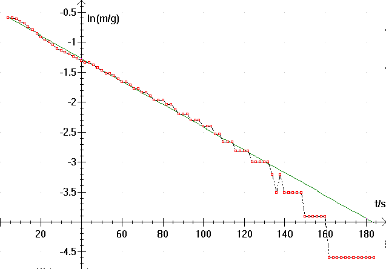
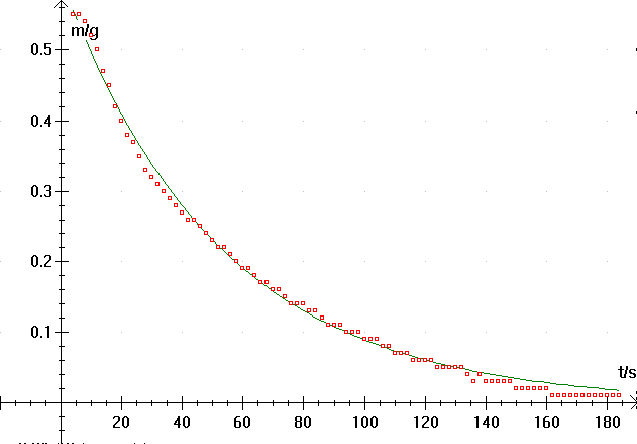

En vægt blev forbundet med serielkabel til computeren og vægten blev tilsluttet via Datalyses apparatmenu.
Et højt bægerglas blev anbragt på vægten, som blev nulstillet.
Lidt mindre end 50 mL vand blev anbragt i glasset.
Datalyse blev sat til at aflæse vægten (2 sekunders interval)
En Idotyltablet blev kastet i vandet. Massen sprang svarende til tablettens begyndelsesmasse. På grund af reaktionen
HCO3-(aq) + H+ (aq) ® H2O(l) + CO2(g)
blev CO2 afgivet fra systemet og massen aftog. Målinger blev foretaget indtil konstant masse. Målingerne blev gemt på disk under navnet IDOTYL.DAT
Logaritmisk afbildning af CO2massen i tabletten som funktion af tiden. Der er tale om en første ordens reaktion i de første 2 minutter.

På basis af målepunkter [1:58] findes regressionslinien
f(t) = 0.594*exp(-0.01882*t)
Hastighedskonstant k = 0.01882 s-1. Halveringstiden er er T=36.83 s.
(Fra Datalyses Memo efter Regress på 58 målepunkter)
Memovinduet gemmer oplysninger om
dataanalysen
Bemærk Datalyses farvekodning af de
mest afvigende punkter på grafen
1: [ 1: 58] : [4.0:118.0] : f(t) = 0.594*exp(-0.01882*t)
a=0.981356, b=0.594, T=36.83 halveringstiden
(a og b er konstanter i modelfunktionen y = b · ax )
Opløsning af IDOTYL brusetablet
På basis af målepunkter [1:58] findes regressionslinien
f(t) = 0.594*exp(-0.01882*t)
Hastighedskonstant k = 0.01882 s-1 .
Halveringstiden er T=36.83 s.
Skulle vi ikke lige indtegne en teoretisk model:
Ved lineær regression sættes X for indsættelse af forskrift for f(t). Nu skal du blot vælge f(t) og taste OK. Vælg dernæst almindelige akser.
Grafen skulle gerne se således ud:

H.C. Jensen, Frederikssund Gymnasium